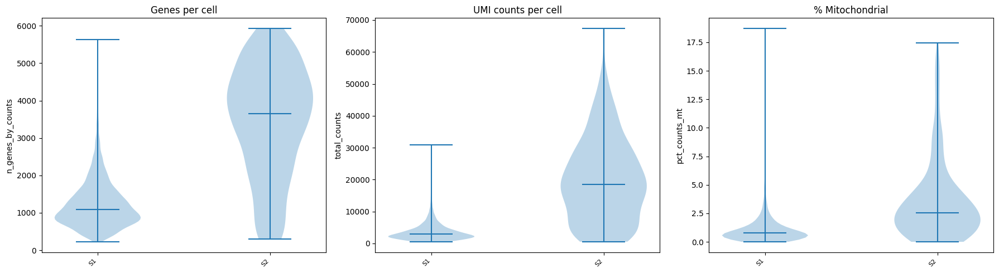
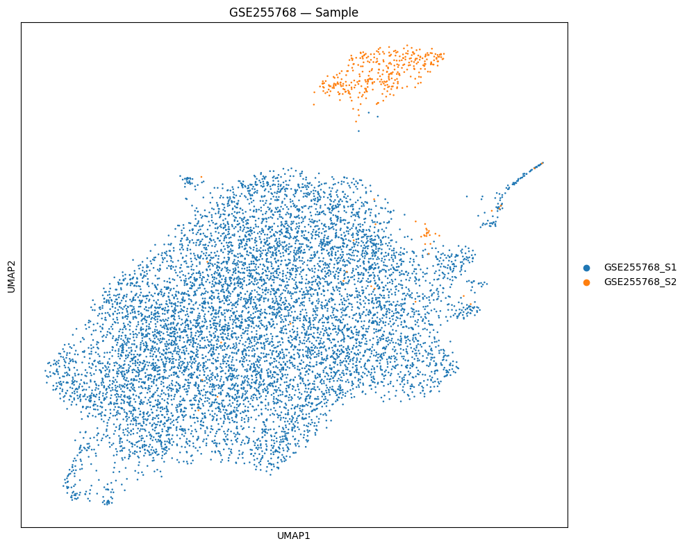
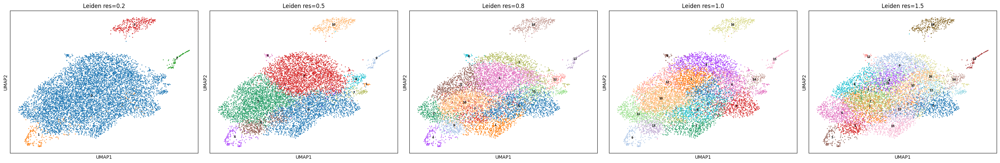
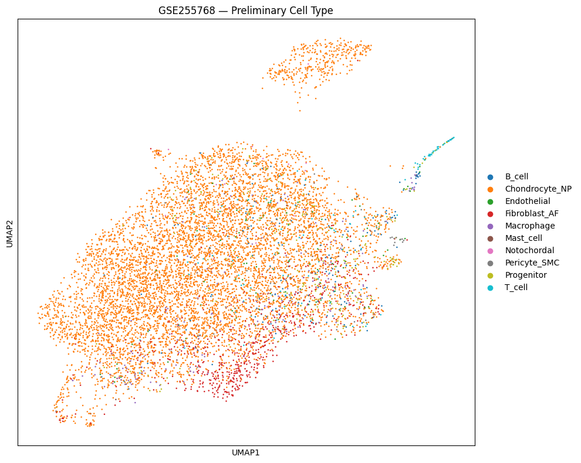
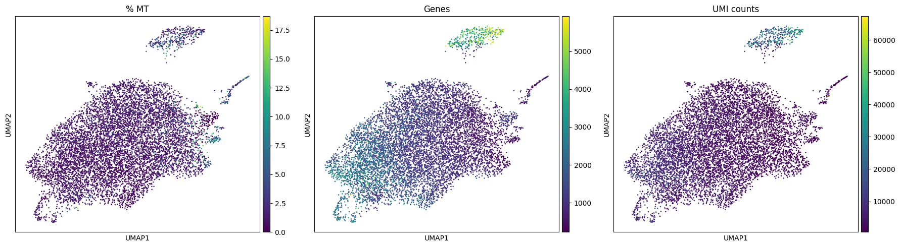
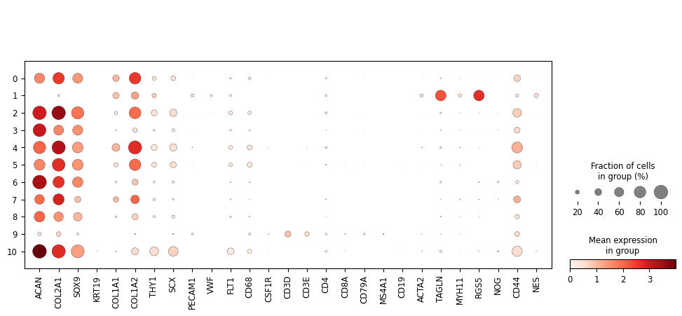
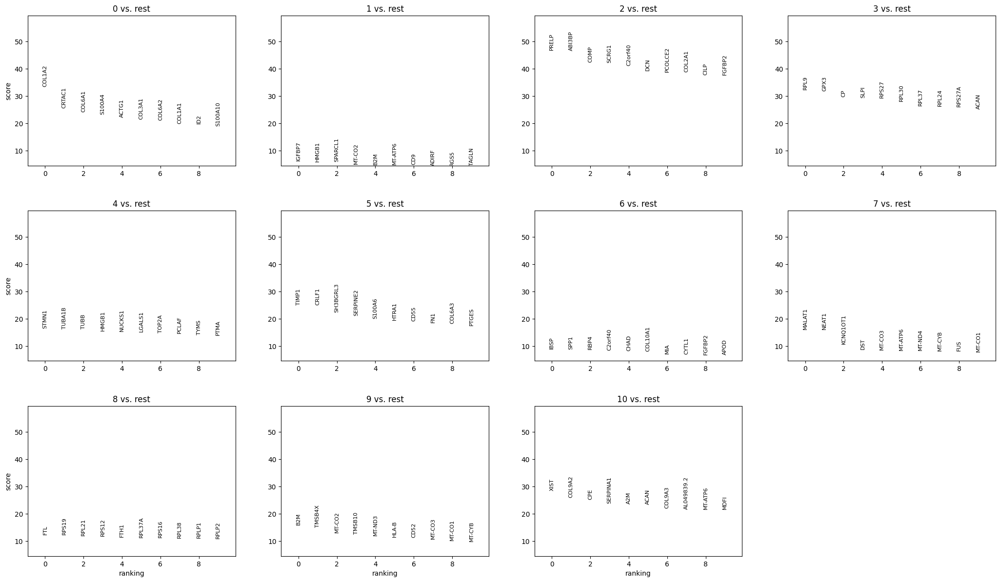

Generated: 2026-03-03 17:05
9051
8886
98.2%
19181
3000
50
11
| Sample | Raw | After QC | After Doublet | Retention % |
|---|---|---|---|---|
| GSE255768_S1 | 8628 | 8503 | 8503 | 98.6% |
| GSE255768_S2 | 423 | 383 | 383 | 90.5% |







| Cell Type | Count | Percentage |
|---|---|---|
| Chondrocyte_NP | 7278 | 81.9% |
| Fibroblast_AF | 656 | 7.4% |
| Progenitor | 263 | 3.0% |
| Macrophage | 206 | 2.3% |
| B_cell | 184 | 2.1% |
| T_cell | 110 | 1.2% |
| Endothelial | 101 | 1.1% |
| Pericyte_SMC | 37 | 0.4% |
| Mast_cell | 28 | 0.3% |
| Notochordal | 23 | 0.3% |